Project Background
This project focused on the end-to-end design and analysis of a mechanical system using SolidWorks. Working in a collaborative team environment, we modeled and assembled a fully functional mechanical system, producing detailed engineering drawings, animations, and supporting analyses. The project emphasized practical application of mechanical design principles, CAD proficiency, and clear technical communication.
System Description
The project involved designing and modeling a mechanically driven antique sewing machine powered by a foot-operated pump pedal. The system consisted of 30+ interrelated components, with each team member responsible for modeling multiple parts. The design incorporated realistic motion transfer using a belt/chain assembly to convert pedal input into rotational and reciprocating motion.
Project Goals
The team aimed to explore the detailed design of the needle, thread path, and stitching mechanism, showcasing these interactions through animation. A key objective was to design a foot-powered drive system capable of operating the entire machine. The project emphasized creating a mechanically meaningful system with real-world relevance.
Plan of Attack
Initially daunting due to the sheer number of components, we broke the machine down into six main categories to make it manageable. This helped guide our design and modeling process. Within this structure, I was responsible for designing and modeling the case and thread system.
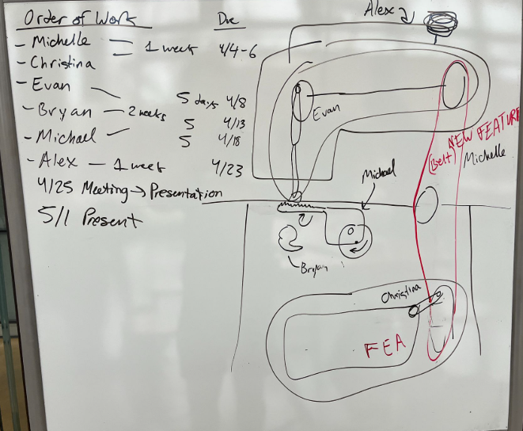
Outer Casing
This model represents the outer casing of the sewing machine, designed to provide structural support and enclosure for the internal mechanisms. The geometry was simplified to focus on overall form, mounting interfaces, and clearances, while preserving the recognizable proportions of a traditional sewing machine body. Fillets and chamfers were incorporated to improve manufacturability and create a cleaner appearance.
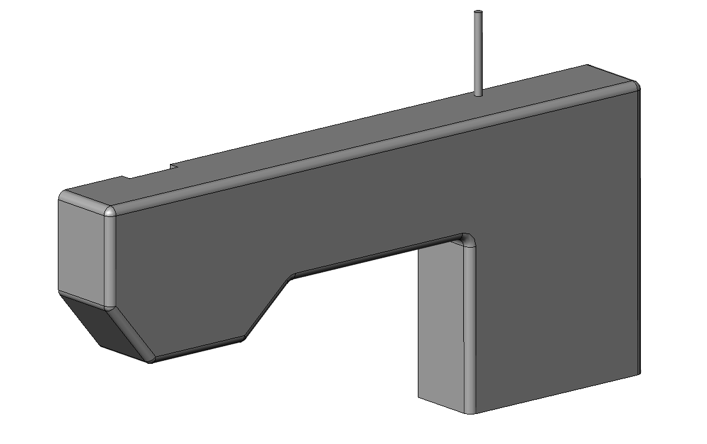
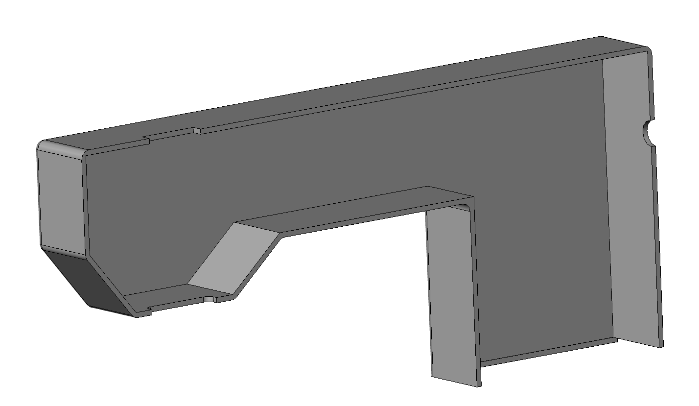
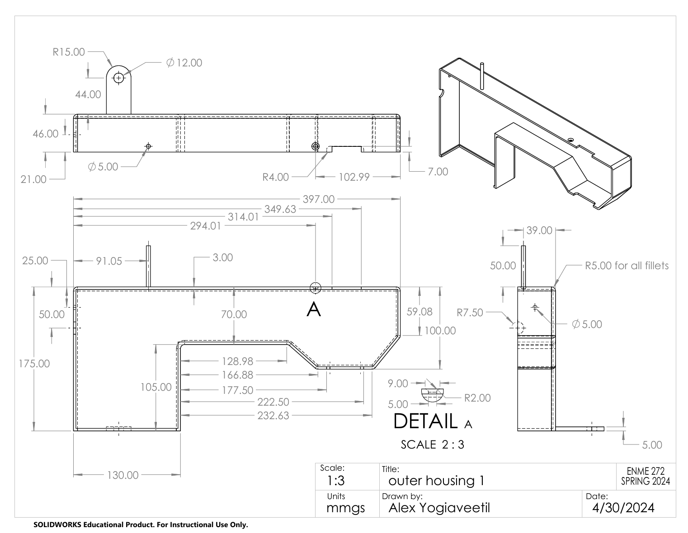
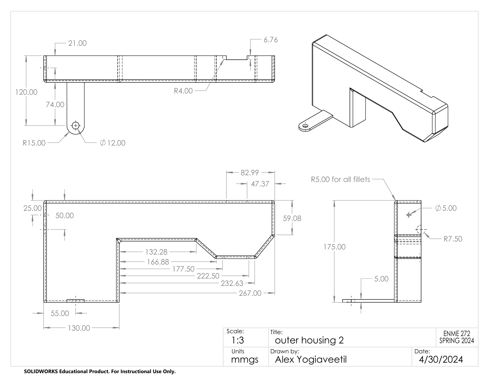
Bottom Section Cover
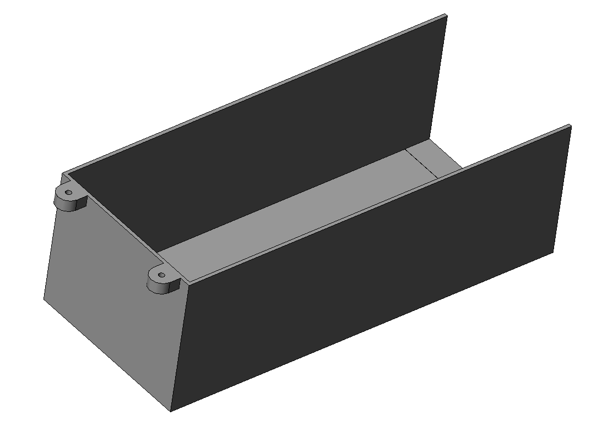
Serves as the lower protective cover of the sewing machine, enclosing mechanisms beneath the work surface. It shields internal components from dust and debris, preserving functionality and providing structural enclosure and visual continuity to the overall assembly.
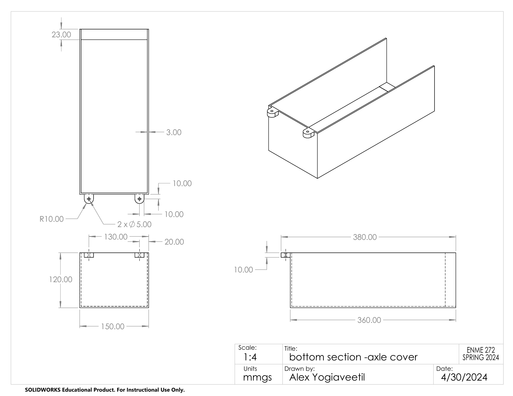
Sewing Spool
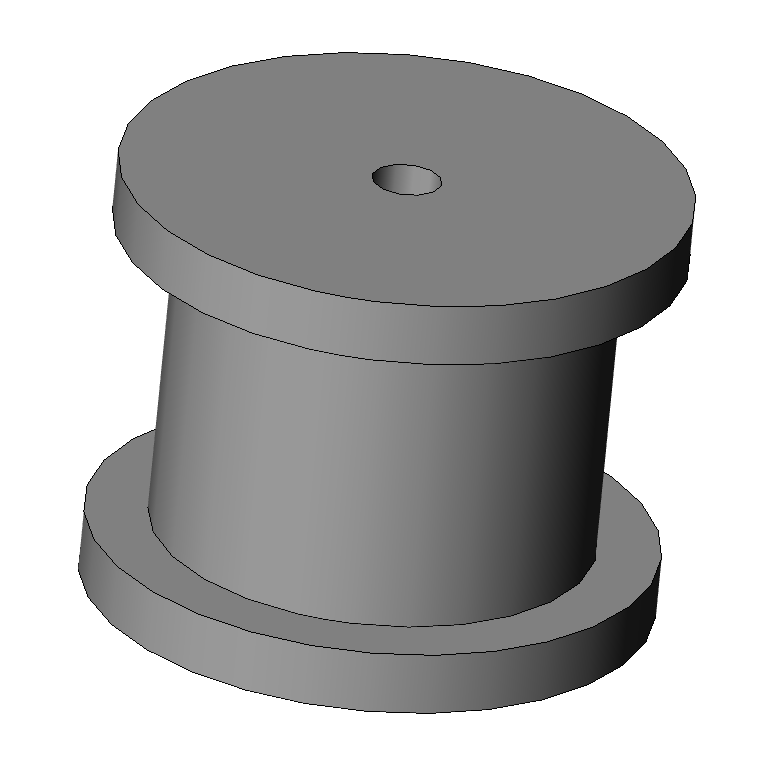
Functions as the thread spool, designed to securely hold thread while allowing smooth, controlled unwinding during operation. The central mounting hole enables the spool to be fixed to the outer housing, ensuring proper alignment and consistent thread feeding.
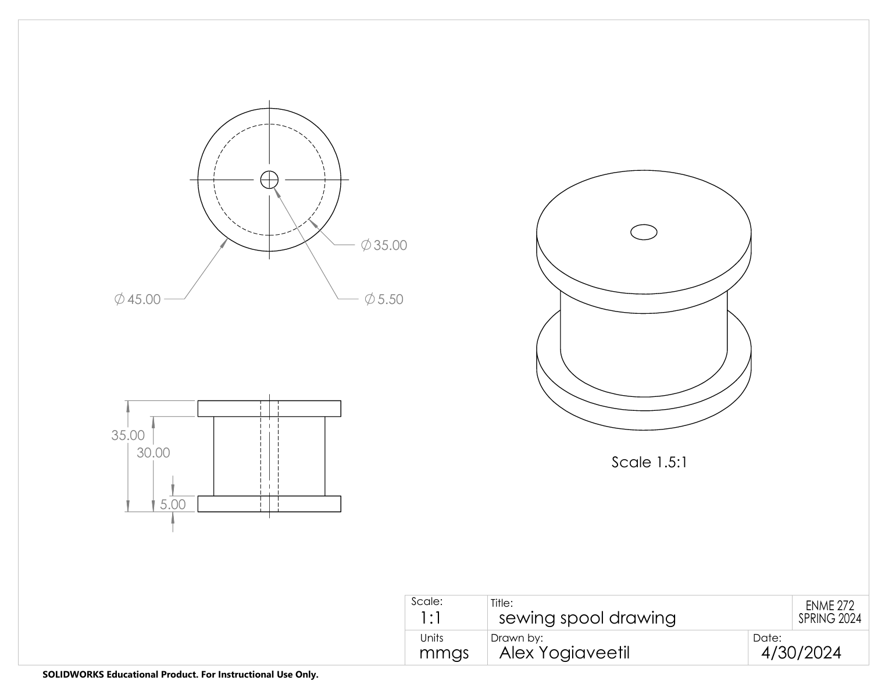
Axle
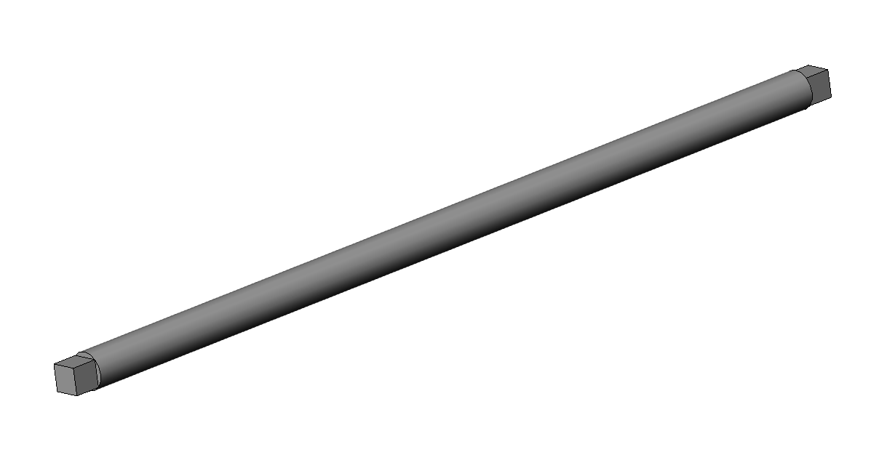
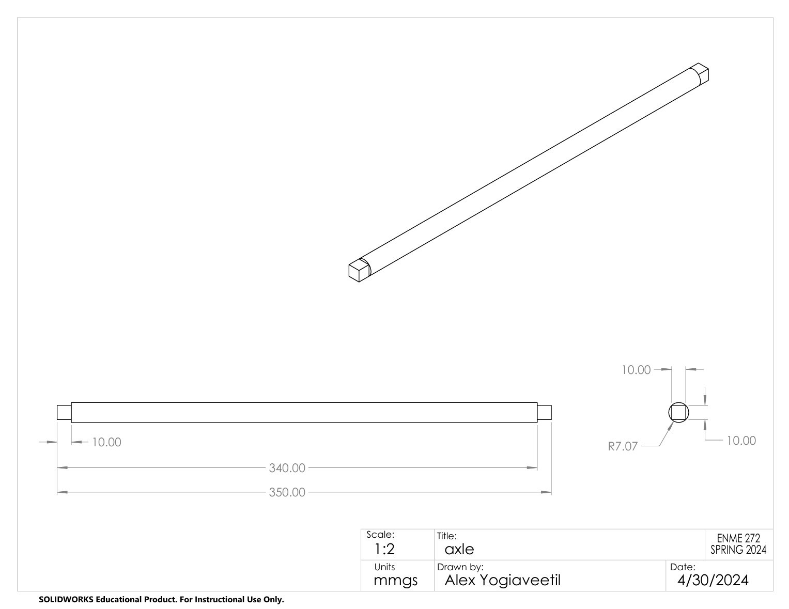
Functions as an axle within the assembly, providing rotational support for attached components while maintaining precise alignment. The cylindrical shaft allows for smooth rotation, while the squared ends enable secure mounting and torque transfer to connected parts.
Final Assembly
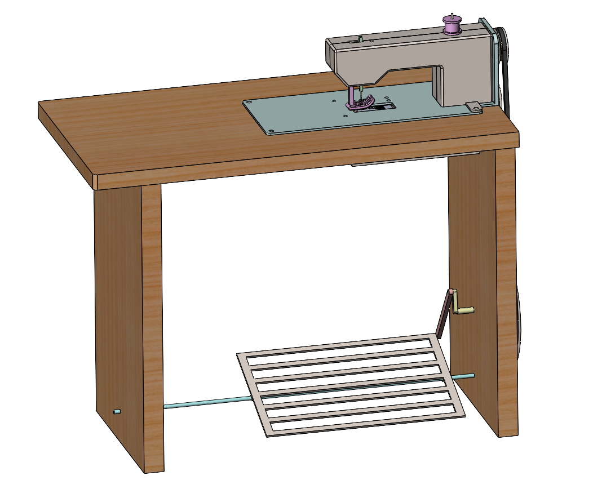
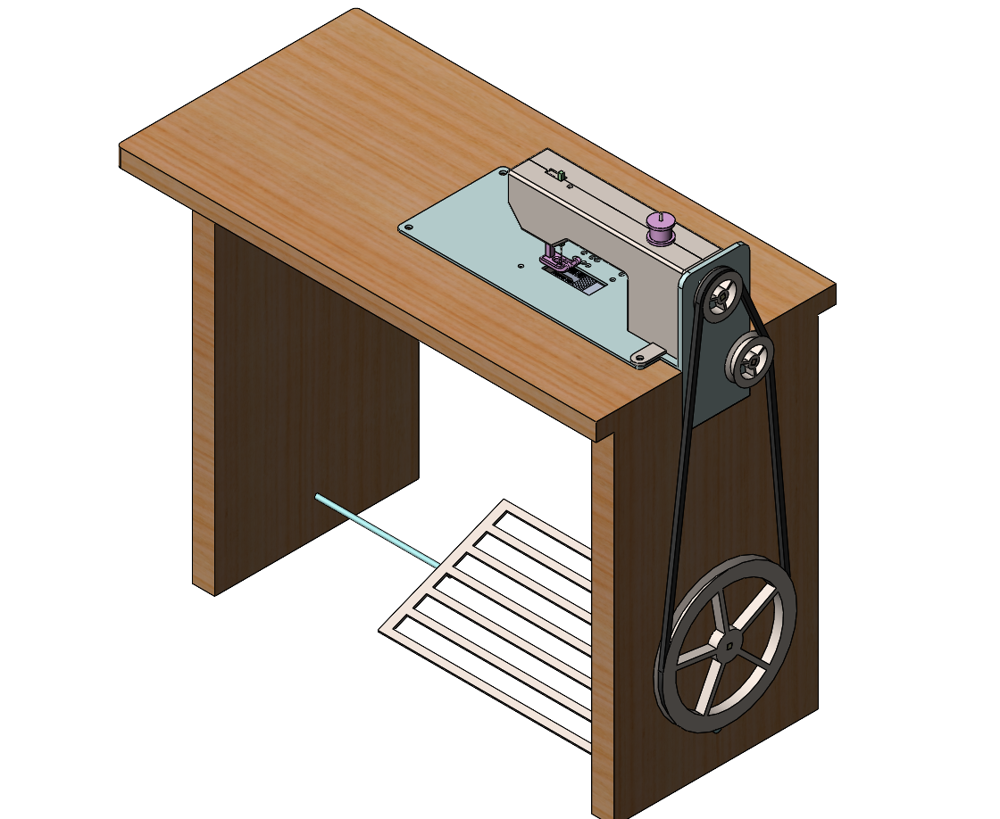
This final assembly brings together all modeled components into a cohesive, functional sewing machine system. The pedal-driven mechanism translates user input into rotational motion through a belt and pulley system, driving the needle operation above the work surface.
Assembly Animation
This animation demonstrates the fully assembled sewing machine, highlighting how individual components come together into a cohesive mechanical system. The motion study illustrates the pedal-driven power transmission, where user input is transferred through a belt and pulley system to drive the needle mechanism.
Finite Element Analysis (FEA)
Analysis Rationale
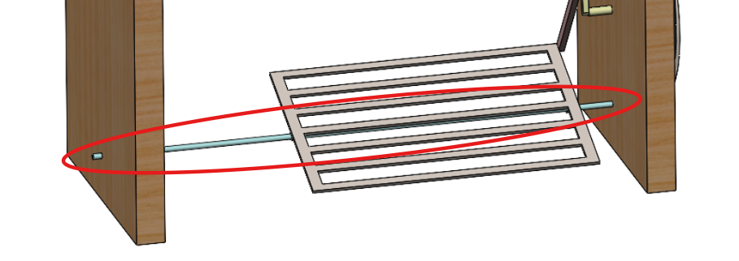
A static FEA was conducted on the foot pedal support beam to evaluate its ability to withstand repeated user loading. The beam was modeled using alloy steel and subjected to an approximate 100 lb applied load at the pedal contact points, representing realistic operating conditions.
Results
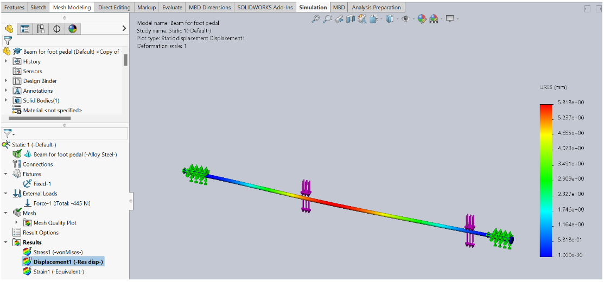
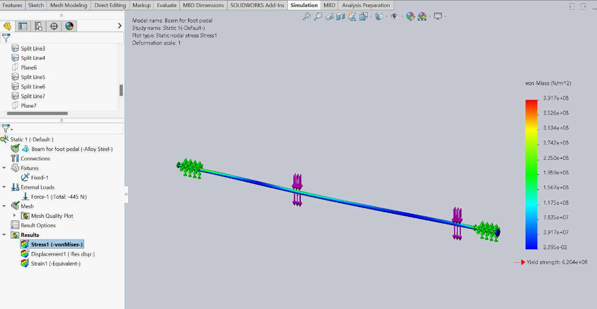
- Max von Mises stress: ~391.7 MPa (below yield strength of 620.4 MPa)
- Max displacement: ~5.8 mm near beam center
- Estimated safety factor: ~1.6
- Beam operates safely within the elastic regime under applied loading
Project Reflection
This project highlighted the importance of simplifying complex mechanical systems into well-defined subsystems. Modeling each component with assembly constraints in mind improved alignment, motion consistency, and overall system integration. Conducting structural analysis on critical load-bearing components reinforced the role of validation in mechanical design. If revisiting the project, additional time would be spent refining tolerances, improving manufacturability considerations, and further validating load assumptions.